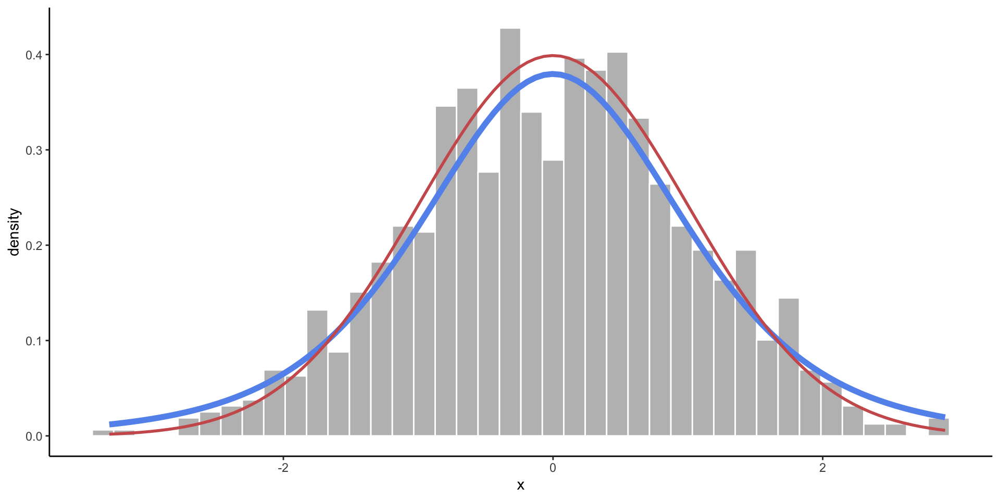
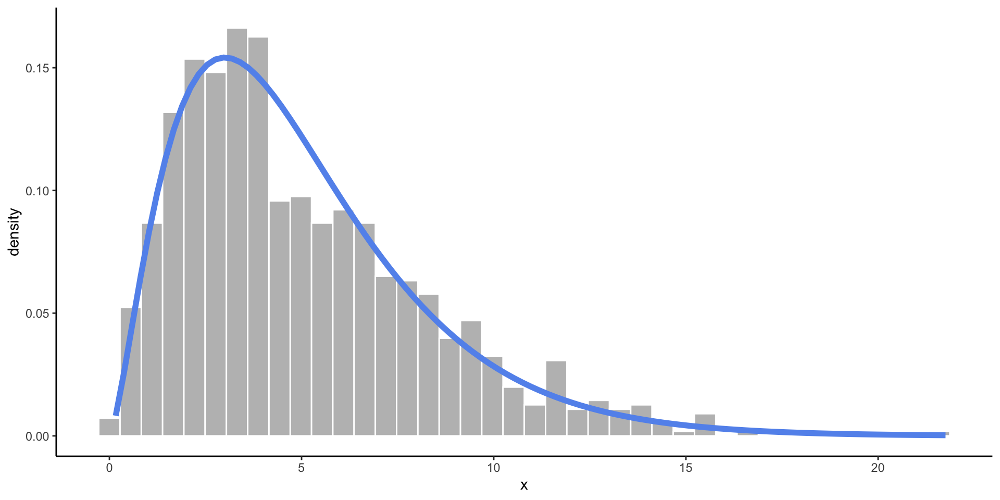

Simulation + Nice Tables
Thursday, 5/22
Today we will…
- Debugging Functions
- Statistical Distributions
- Simulating Data
- Communicating Findings from Statistical Computing
- Describing data
- Designing Plots
- Report-ready tables
- PA 8.2: Instrument Con
Debugging Functions
A couple of strategies
Don’t write a whole function at once (if it is complicated)!
- Write small parts and test each
- test often
Set up intermediate tests
Print a lot
Just staring at your code probably won’t help
Statistical Distributions
Statistical Distributions
Recall from your statistics classes…
A random variable is a value we don’t know until we observe an instance.
- Coin flip: could be heads (0) or tails (1)
- Person’s height: could be anything from 0 feet to 10 feet.
- Annual income of a US worker: could be anything from $0 to $1.6 billion
The distribution of a random variable tells us its possible values and how likely they are.
- Coin flip: 50% chance of heads and tails.
- Heights follow a bell curve centered at 5 foot 7.
- Most American workers make under $100,000.

Statistical Distributions with Names!
Uniform Distribution
- When you know the range of values, but not much else.
- All values in the range are equally likely to occur.
Normal Distribution
- When you expect values to fall near the center.
- Frequency of values follows a bell shaped curve.
t-Distribution
- A slightly wider bell curve.
- Basically used in the same context as the normal distribution, but more common with real data (when the standard deviation is unknown).

Chi-Square Distribution
- Somewhat skewed, and only allows values above zero.
- Commonly used in statistical testing.

Binomial Distribution
- There are two possible outcomes, and you are counting how many times one of the outcomes occured out of a fixed number of trials.
- Takes discrete values from 0 to the number of trials.
How do we use distributions?
- Find the probability of an event.
- If I flip 10 coins, what are the chances I get all heads?
- Estimate a proportion of a population.
- About what proportion of people are above 6 feet tall?
- Quantify the evidence in your data.
- In my survey of 100 people, 67 said they were voting for Measure A. How confident am I that Measure A will pass?
Distribution Functions in R
r is for random sampling.
- Generate random values from a distribution.
- We use this to simulate data (create pretend observations).
p is for probability.
- Compute the chances of observing a value less than
x: \(P(X < x)\) - We use this for calculating p-values.
q is for quantile.
- Given a probability \(p\), compute \(x\) such that \(P(X < x) = p\).
- The
qfunctions are “backwards” of thepfunctions.
d is for density.
- Compute the height of a distribution curve at a given \(x\).
- For discrete dist: probability of getting exactly \(x\).
- For continuous dist: usually meaningless.
Probability of exactly 12 heads in 20 coin tosses, with a 70% chance of tails?
Empirical vs. Theoretical Distributions
Empirical: the observed data.
Plotting Both Distributions
Simulation - Sampling From Probability Distributions
Generating Simulated Data - The Idea
We can generate fake (“synthetic”) data based on the assumption that a variable follows a certain distribution.
We randomly sample observations from the distribution.
Reproducible samples: set.seed()
Since there is randomness involved, we will get a different result each time we run the code.
To generate a reproducible random sample, we first set the seed:
Whenever you are doing an analysis that involves a random element, you should set the seed!
Simulate a Dataset
| names | height | age | measure | supports_measure_A |
|---|---|---|---|---|
| Elbridge Kautzer | 67.43632 | 66.29460 | 1 | yes |
| Brandon King | 64.99480 | 61.53720 | 0 | no |
| Phyllis Thompson | 68.09035 | 53.83715 | 1 | yes |
| Humberto Corwin | 67.45541 | 33.87560 | 1 | yes |
| Theresia Koelpin | 71.37196 | 16.12199 | 1 | yes |
| Hayden O'Reilly-Johns | 66.17853 | 36.96293 | 0 | no |
Check to see the ages look uniformly distributed.
Simulate Multiple Datasets - Step 1
Write a function to simulate height data from a population with some mean and SD height.
The user should be able to input:
- how many observations to simulate
- the mean and standard deviation of the Normal distribution to use when simulating
Simulate Multiple Datasets - Step 2
Create a set of parameters (mean and SD) for each population.
Simulate Multiple Datasets - Step 3
Simulate datasets with different mean and SD heights.
crossing(mean_ht = seq(from = 60, to = 78, by = 6),
std_ht = c(3, 6)
) |>
mutate(ht_data = pmap(.l = list(avg = mean_ht, std = std_ht),
.f = sim_ht
)
)# A tibble: 8 × 3
mean_ht std_ht ht_data
<dbl> <dbl> <list>
1 60 3 <tibble [200 × 2]>
2 60 6 <tibble [200 × 2]>
3 66 3 <tibble [200 × 2]>
4 66 6 <tibble [200 × 2]>
5 72 3 <tibble [200 × 2]>
6 72 6 <tibble [200 × 2]>
7 78 3 <tibble [200 × 2]>
8 78 6 <tibble [200 × 2]>Why am I getting a tibble in the ht_data column?
Simulate Multiple Datasets - Step 4
Extract the contents of each list!
# A tibble: 10 × 4
mean_ht std_ht person ht
<dbl> <dbl> <int> <dbl>
1 60 3 1 64.6
2 60 3 2 57.4
3 60 3 3 65.8
4 60 3 4 56.7
5 60 3 5 57.5
6 60 3 6 60.6
7 60 3 7 56.5
8 60 3 8 55.9
9 60 3 9 60.4
10 60 3 10 60.1Why do I now have person and ht columns?
How many rows should I have for each mean_ht, std_ht combo?
A note: nest() and unnest()
- We can pair functions from the
map()family very nicely with twotidyrfunctions:nest()andunnest(). - These allow us to easily map functions onto subsets of the data.
nest()subsets of the data (as tibbles) inside a tibble.
unnest()the data by row binding the subsets back together.
Simulate Multiple Datasets - Step 5
Plot the samples simulated from each population.
Code
fake_ht_data |>
mutate(across(.cols = mean_ht:std_ht,
.fns = ~as.character(.x)),
mean_ht = fct_recode(mean_ht,
`Mean = 60` = "60",
`Mean = 66` = "66",
`Mean = 72` = "72",
`Mean = 78` = "78"),
std_ht = fct_recode(std_ht,
`Std = 3` = "3",
`Std = 6` = "6")
) |>
ggplot(mapping = aes(x = ht)) +
geom_histogram(color = "white") +
facet_grid(std_ht ~ mean_ht) +
labs(x = "Height (in)",
y = "",
subtitle = "Frequency of Observations",
title = "Simulated Heights from Eight Different Populations")
Simulation - Random Samples from a Fixed Population
Draw a Random Sample
Use sample() to take a random sample of values from a vector.
[1] "cat" "goat" "chicken"[1] "dog" "horse" "dog" "cat" "goat" [1] 1 0 0 0 0 0 0 0 0 0Warning
Whenever you take a sample, think about if you want to take a sample with or without replacement. The default is to sample without replacement.
Draw a Random Sample
Use slice_sample() to take a random sample of observations (rows) from a dataset.
| names | height | age | measure | supports_measure_A |
|---|---|---|---|---|
| Alexander Nicolas | 60.78593 | 25.87201 | 0 | no |
| Marnie Witting | 67.55575 | 48.26608 | 1 | yes |
| Liddie Wiza-Pouros | 66.36513 | 29.91378 | 1 | yes |
| names | height | age | measure | supports_measure_A |
|---|---|---|---|---|
| Debera Kirlin | 70.01628 | 20.18689 | 0 | no |
| Demario Muller | 69.03207 | 34.78672 | 1 | yes |
| Alvera Mayert | 66.06743 | 57.62611 | 0 | no |
| Dr. Duwayne Gleichner | 64.79083 | 31.31543 | 0 | no |
| Dr. Bethany Fisher | 71.70982 | 33.81118 | 1 | yes |
Example: Birthday Simulation
Suppose there is a group of 50 people.
- Simulate the approximate probability that at least two people have the same birthday (same day of the year, not considering year of birth or leap years).
Example: Birthday Simulation
Write a function to …
- … simulate the birthdays of 50 random people (assuming it is equally likely to be born any day of the year).
- … count how many birthdays are shared.
- … return whether or not a shared birthday exists.
Example: Birthday Simulation
Use a map() function to repeat this simulation 1,000 times.
- What proportion of these datasets contain at least two people with the same birthday?
In-line Code
We can automatically include code output in the written portion of a Quarto document using `r `.
- This ensures reproducibility when you have results from a random generation process.
Type this: `r mean(sim_results)*100`% of the datasets contain at least two people with the same birthday.
To get this: 96.9% of the datasets contain at least two people with the same birthday.
Communicating Findings from Statistical Computing
Remember the Data Science Process
Communicating about your analysis and findings is a key element of statistical computing.
Describing data
- Data source(s)
- Observational unit / level (e.g. county and year)
- Overview of what is included (e.g. demographic incormation and weekly median childcare costs for each county and year)
- Years or geographies included (e.g. 2008-2018, CA only)
Describing data cleaning
- What does the audience need to know about any choices / decisions that you make while cleaning the data?
- how did you handle missing data?
- how did you define variables?
- did you drop any observations? How many and why?
- This doesn’t include
- discussing specific file, variable, or function names
- data cleaning that has no impact on interpretating the resulting analysis
- e.g. changing the type of a variable
Describing data cleaning
Which is clearer to a general audience?:
In this analysis, we use data from the US Department of Labor which includes a variety of measurements of a state’s minimum wage for US states and territories by year. We additionally include information from a dataset provided by the Harvard Dataverse on state party leanings by year. Our analysis includes the years 1976 - 2020 and the 50 US states.
In this analysis, we use
inner_join()to joinus-party-data.csvandus-minimum-wage-data.csvbyyearandstate.
Plot Design
Stepping back…
- What do you want to be very easy to see from your plot?
- What aesthetics will help make comparisons?
- You may want to try a couple of different aesthetic choices to see which is clearer
- A clear plot will often look “boring” to you!
Table Design
- What do you want to communicate / emphasize?
- What should the rows and columns be?
- What are clear labels?
- Is there any grouping of rows and/or columns that would be helpful?
Report Ready Tables in R
- We have just shown data tables directly, midly formatting for html using
kable()
- We can make report-ready tables using
kableExtraorgt!

Yay reproducibility!
- Formatting tables in code makes them completely reproducible
- No need to update results manually in a table
- No room for copy-paste error
- Can integrate directly into a report / paper
Yay reproducibility!
Nice tables with kable() and kableExtra functions
Nice tables with the gt package
- Fancy, report tables
- Lots of formatting options for common variable types
- Syntax less error-prone
- Create labels directly with markdown!
- Get started
- Full index of functions
Table Design Example
“Raw” Table:
Table Design Example - kableExtra
Code
tab_dat |>
arrange(desc(avg_weight)) |>
kable(digits = c(0, 1, 1, 0),
col.names = c("Species", "Mean", "SD", "N. Samples"),
caption = "Summaries of fish weights by species across all sampling years (between 1989 - 2006) trips and sites.") |>
kable_classic(full_width = F,
bootstrap_options = "striped") |>
add_header_above(c(" " = 1, "Weight (g)" = 2," " = 1),
bold = TRUE) |>
row_spec(row = 0, bold = T, align = "c")Weight (g) |
|||
|---|---|---|---|
| Species | Mean | SD | N. Samples |
| Bull | 598.4 | 635.4 | 553 |
| Brown | 425.9 | 381.8 | 3171 |
| WCT | 266.4 | 179.5 | 2287 |
| RBT | 183.2 | 182.3 | 12341 |
Table Design Example - gt
Code
tab_dat |>
arrange(desc(avg_weight)) |>
gt() |>
tab_options(table.font.size = 32) |>
tab_header(
title = "Summary of Fish Weights by Species",
subtitle = "all sampling years, trips, and sites"
) |>
tab_spanner(label = md("**Weight (g)**"),
columns = c(avg_weight, sd_weight)) |>
tab_style(style = cell_text(align = "center"),
locations = cells_column_labels()) |>
cols_align(align = "left",
columns = species) |>
fmt_number(columns = c(avg_weight, sd_weight),
decimals = 1) |>
fmt_number(columns = n,
decimals = 0) |>
cols_label(
"avg_weight" = md("**Mean**"),
"sd_weight" = md("**SD**"),
"n" = md("**N. Samples**"),
"species" = md("**Species**")
)| Summary of Fish Weights by Species | |||
| all sampling years, trips, and sites | |||
| Species |
Weight (g)
|
N. Samples | |
|---|---|---|---|
| Mean | SD | ||
| Bull | 598.4 | 635.4 | 553 |
| Brown | 425.9 | 381.8 | 3,171 |
| WCT | 266.4 | 179.5 | 2,287 |
| RBT | 183.2 | 182.3 | 12,341 |
PA 8.2: Instrument Con
Work with statistical distributions to determine if an instrument salesman is lying.
Lab 8: Searching for Efficiency
Revisit previous lab problems through the lens of efficiency
- Use functions from
map()instead ofacross() - Reduce separate pipelines into a single pipeline
- Make nice tables!
To do…
- Project Proposal + Data
- Due Tomorrow, Friday 5/23 at 11:59pm.
- Lab 8: Searching for Efficiency
- Due Tuesday 5/27 at 11:59pm.
- Read Chapter 9: Linear Regression
- Check-in 9 due Thursday 5/29 before class.
See you in a week!
Enjoy the long weekend! A reminder that we do not have class on Tuesday 5/27.